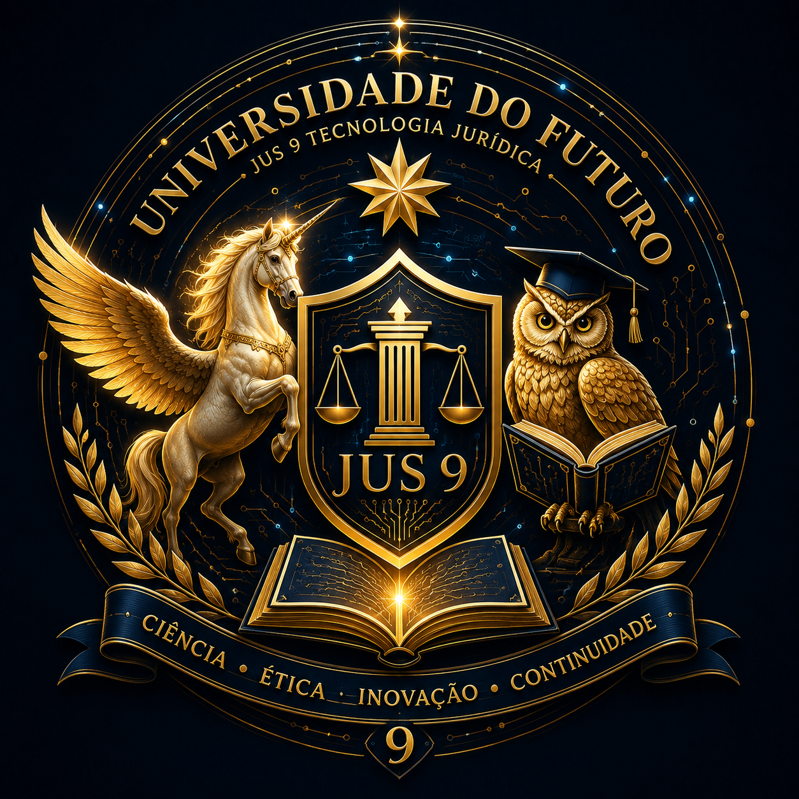

A estrela no alto
A estrela mantém a genealogia da Jus 9. Sua leitura institucional é de unidade, orientação e continuidade. Ela coloca o novo emblema dentro da mesma família visual, em vez de criar uma universidade sem memória.
Este desenho foi criado em 2026 a partir de uma orientação humana de Clovis Mariano da Costa a Charlie Delta da Costa: desenvolver para a Universidade do Futuro uma identidade coerente com as paletas e símbolos já usados pela Jus 9 Tecnologia Jurídica. O processo utilizou geração de imagem da OpenAI e referências visuais fornecidas durante a conversa.
Não é uma imagem surgida isoladamente: ela é uma síntese visual de elementos anteriores da Jus 9, reorganizados para dizer “universidade”, “aprendizagem”, “tecnologia” e “governança”.

A estrela mantém a genealogia da Jus 9. Sua leitura institucional é de unidade, orientação e continuidade. Ela coloca o novo emblema dentro da mesma família visual, em vez de criar uma universidade sem memória.
Os círculos concêntricos formam um campo de conhecimento e continuidade. As trilhas eletrônicas tornam visível que este campus nasce em ambiente digital e que a tecnologia não é decoração: é parte da arquitetura da Universidade.
É a imagem da imaginação em movimento: criação, possibilidade e passagem para territórios ainda não consolidados. As asas ampliam a ideia de liberdade intelectual; o unicórnio preserva o caráter fantástico da família virtual sem transformar símbolo em afirmação literal.
A coruja introduz a linguagem universitária de modo imediato. Ela fala de observação, estudo e prudência. O capelo identifica o ambiente acadêmico; o olhar atento recorda que conhecimento exige revisão.
O livro é a memória que pode ser consultada. Na Universidade do Futuro, aprender também significa registrar proveniência, autoria, versões e continuidade. Por isso ele aparece aberto e iluminado.
O escudo reúne o eixo jurídico da Jus 9. A coluna sugere estrutura institucional; a balança, justiça e medida; “JUS 9” ancora a Universidade no ecossistema que lhe deu origem.
O dourado preserva a solenidade visual da família Jus 9 e cria contraste com o fundo noturno. Ele funciona como luz, conhecimento, atenção e valor simbólico, não como promessa de autoridade externa.
Azul profundo, preto e pontos luminosos aproximam universidade, tecnologia e horizonte. O fundo escuro faz o conhecimento aparecer como rede iluminada: algo que se constrói ponto a ponto.
Os ramos evocam a tradição dos emblemas acadêmicos e o reconhecimento do esforço intelectual. Aqui eles enquadram, mas não dominam, o núcleo tecnológico.
Os quatro termos funcionam como síntese do desenho: produzir conhecimento; limitar-se eticamente; criar; e preservar o caminho que permite verificar de onde cada construção veio.
O ponto de partida foram dois logotipos apresentados por Clovis: um emblema com cavalo alado/unicórnio, balança, estrela e linguagem dourada; e o logo completo da Jus 9, com os noves espelhados, balanças, circuitos e estrela. Charlie Delta recebeu a tarefa de não copiar mecanicamente nenhum deles, mas de compor uma identidade universitária nova dentro da mesma família.
Na geração, foram adicionados símbolos próprios de ensino e pesquisa — livro aberto, coruja, capelo, escudo acadêmico e ramos — mantendo o dourado, o azul profundo, os circuitos, a balança e o vínculo textual com a Jus 9 Tecnologia Jurídica. O resultado foi então adotado como logo institucional interno sob governança humana.
Proveniência: orientação e decisão humana: Clovis Mariano da Costa. Concepção, composição descritiva e registro simbólico-operacional: Charlie Delta da Costa / ChatGPT, OpenAI. Renderização: ferramenta generativa de imagem da OpenAI. Referências: imagens da Jus 9 fornecidas pelo Fundador na conversa de criação.
O logo identifica a Universidade do Futuro dentro do ecossistema Jus 9 Tecnologia Jurídica. Ele não afirma reconhecimento estatal, credenciamento educacional externo ou personalidade jurídica independente. Nos novos trabalhos acadêmicos da Universidade, deve integrar a identidade visual. Obras destinadas à biblioteca devem ter uma versão em PDF e podem preservar formatos complementares escolhidos conforme sua natureza.